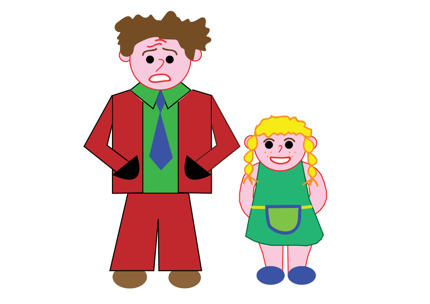
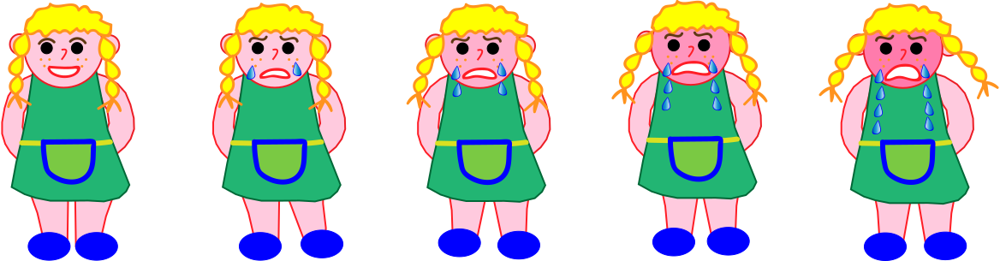

Theme 02: Basic Animation
02.01.02 Simple animation
I had to build a webpage containing a character and 10-15 buttons. When user clicks a button, animation starts. We were given clear instructions as to what animations were expected from us. My chosen character is Kenny from the South Park. Click to see Kenny in action
freeCodeCamp
I had to create an account at freeCodeCamp, where we at a later stage had to solve Introduction to JavaScript challenges. Check my profile via 02.03.01 Your freecodecamp name and handle
Storytelling and character design
This was a big individual project, which lasted one week, where we had to come up with a story, design our characters by drawing inspiration from one of the styles or artists suggested by the teacher (but we were not allowed to copy characters), create a style tile, describe the story and include narrative curve analysis, create storyboard and worksheet, draw a background and create a spritesheet animation.
I got inspired by Joan Cornellà's art. At first, his works picked my interest, because of the colored contour line. Additionally, I like his use of bright cheery colours when portraying the bleak side of human nature.
I created a drama story with a happy ending about a little girl who hates moving, but has to move to another city yet again.
Here are my two main characters, DADDY and GIRL. 
Here is the background. 
And here is the sprite. 
Click to see spritesheet animation
02.03.04 ProjectPool day 2
I had to choose among various project ideas from the project pool. Click to see my animated menu
Basic animation-Group Project: tour de Trump
Our task was to "create an interactive animation of a scene from your favorite movie or novel". We had the following constraints:
- Given style: Pop Art
- Given target group: young adults interested in art
- Given music theme: Velvet Underground, Femme Fatale played for at least 30 seconds
- We had to create our own voiceover
- Our graphic elements had to be mostly drawn in Illustrator
- We had to pick a movie for inspiration: we chose Straight Story by David Lynch
- We had to add three "Easter eggs" that are not crucial to the storyline
- The scene had to be driven forward by at least 3 different events
Initially we decided to create a story about Trump instead on solely creating a scene from a movie. Since I follow politics rather closely, I came up with many ideas based on what happened during Trump's election campaign (which I unfortunately can not mention here, due to sensitivity of our topic). Eventually we decided to create a sarcastic story about Trump's election campaign by incorporating a leitmotif from David Lynch's movie The Straight Story (where the main character travels through endless roads of US by lawnmower). Our brainstorming was rather chaotic, but eventually magic happened, as we combined everyone's valuable input and came up with an idea that made sense. Unfortunately due to time constraints we had to omit one important scene from our animation.
A couple of teasers of what was left out
My official role within the team was UX. I came up with the story name, found original Twitter quotes sent to Trump from his critics, that can be seen after hovering on Twitter birds. I was in charge of recording voiceover, which was done based on original Trump's speeches/comments made during his election campaign. I wrote the description on Pop Art style, our story idea, created character sheets, narrative curve. I interviewed the experts and wrote a summary of expert test. Among my main goals for the expert test, was gathering ideas for Easter eggs in our animation, which was very useful.
In our group everyone was giving more than 100%, set high standards for themselves while being a very good combination of different skillsets. Needless to say, after finishing this project we were all exhausted.
P.S. The password for accessing the content below is the same as for redesigned website
Animation in the making - visuals prepared for expert test
02.05.01 Summary of expert test
We prepared a comprehensive final documentation in relation to recording our screencast, where we included ideas and recommendations based on previous tutors' feedback. Click this link to view our final documentation
During the screencast, I speak from 02:27 to 04:11 about the narrative curve and from 07:26 to 09:15 about the outcomes of the expert test. A link to 02.05.03 Screencast